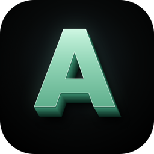

AccountabilityPrivacy policy
Effective 24 October 2026
What the app stores
To work, the app saves two things on your device:
- Your reminder times, so it knows when to start a check-in.
- Your check-ins: the date and time, your slider ratings (focus, calm, energy, urge), which statements you ticked, what you wrote, and whether the check-in ended in a red flag. This is what the "Your patterns" screen is built from.
On Windows these are saved in the app's own folder on your PC. They never leave your device.
What we collect
Nothing. The app does not send your check-ins, your writing, your settings, usage data or any identifiers to us or to any third party. It does not need an internet connection to work.
Purchases
If you buy Accountability, the purchase is handled entirely by the store you bought it from (for example the Microsoft Store). We do not receive your payment details. The store's own privacy policy applies to the purchase, for example the Microsoft Privacy Statement.
Deleting your data
Uninstalling the app from the Microsoft Store version removes its saved data. If you use a standalone version, you can delete your data at any time by deleting the folder %LOCALAPPDATA%\Accountability on your PC.
Children
Accountability is not directed at children under 13, and we do not knowingly collect any information from anyone, including children.
Not medical advice
Accountability is a self-reflection tool. It does not diagnose or treat any condition and is not a substitute for professional help. If you are struggling, please reach out to a medical professional or a local support service.
Changes
If this policy changes, the new version will be posted on this page with a new effective date.
Contact
Questions about privacy can be sent through the support contact listed on the app's store page.